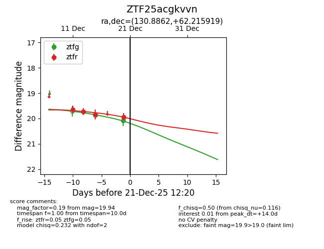
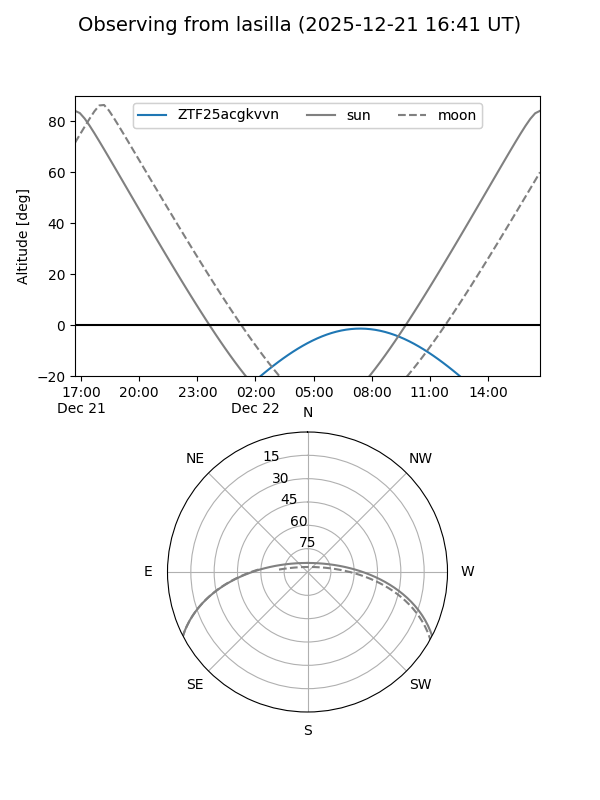
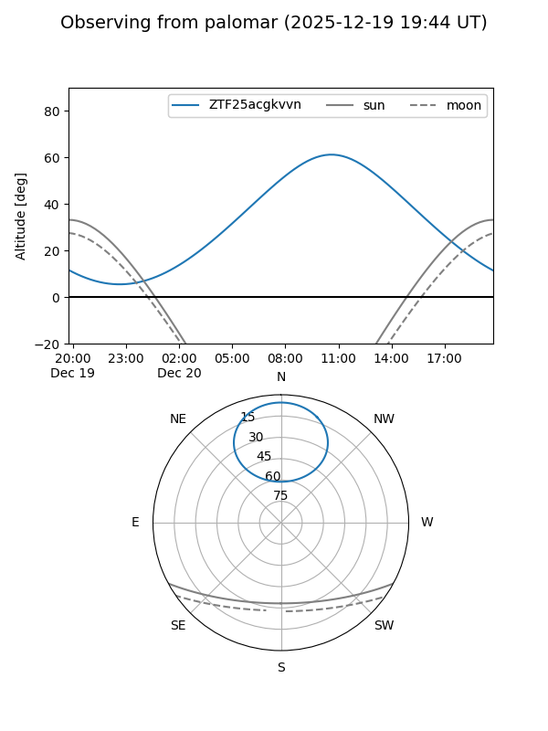
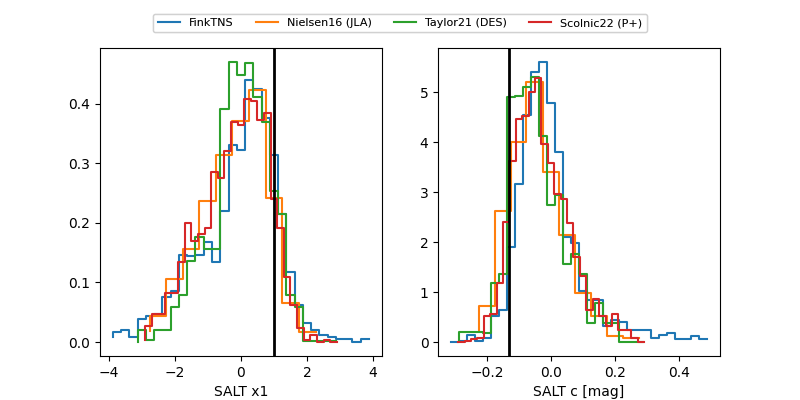

ZTF25acgkvvn
Target ZTF25acgkvvn at 2025-12-20 11:44
Aliases and brokers:
FINK: fink-portal.org/ZTF25acgkvvn
Lasair: lasair-ztf.lsst.ac.uk/objects/ZTF25acgkvvn
ALeRCE: alerce.online/object/ZTF25acgkvvn
alt names
ZTF25acgkvvn (ztf,fink_ztf)
Coordinates:
equatorial (ra, dec) = 130.8862,+62.21592
equatorial (HMS+DMS) = 08:43:32.68,+62:12:57.31
galactic (l, b) = (153.8326,+36.75175)
Flags:
Photometry:
last ztfg=20.09, ztfr=19.94
2 ztfg, 4 ztfr detections
Lightcurve

Visibility


Additional plots
